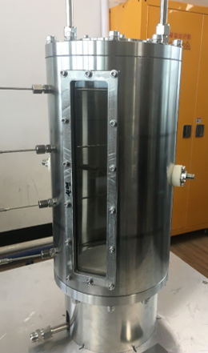
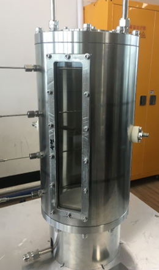

Research Field
The Lab of Combustion and Technology Convergence (LCTC) is engaged in a wide spectrum of combustion and fire-safety research, focusing on advancing energy-conversion efficiency. Our work bridges fundamental combustion science with applied engineering to realize safer, cleaner, and more efficient systems.
In fire-safety research, a key topic is the mitigation of lithium-ion battery explosions and fires. Through controlled thermal-runaway experiments and electric-field-assisted suppression techniques, we aim to understand ignition mechanisms and establish rapid extinguishing methods applicable to electric vehicles and ESS systems.
 

Another core topic is the control of combustion instability and flashback prevention in gas turbines. The laboratory explores thermoacoustic interactions and flame dynamics under lean combustion with applied electric fields to achieve high efficiency and stability in energy systems.
Research is also focused on high-temperature pyrolysis for N2O reduction and numerical analysis of decomposition pathways. Experimental and computational approaches are combined to reduce greenhouse gas emissions through optimized thermal processes.
The lab studies hydrogen production via ammonia (NH3) and LNG reforming, aiming to support the transition to carbon-free energy. Experiments explore plasma-assisted and catalytic reactions to enhance fuel conversion and efficiency.
Lastly, the laboratory develops plasma-assisted combustion technologies for flame stabilization, ignition enhancement, and pollutant reduction in low-temperature conditions, integrating plasma physics, electrical diagnostics, and reaction kinetics.
Experimental Facilities and Software
LCTC is equipped with advanced facilities, including: a lithium-ion battery thermal runaway induction-device system, a high-temperature decomposition reactor, combustion burners (Counterflow, A quarter-wavelength tube , Constant-volume, Bunsen, Co-flow), laser diagnostics (FT-IR, PIV), plasma systems, and computational tools (ANSYS CHEMKIN, MATLAB, ORIGIN, TECPLOT, FL-IR).
Representative Achievements and Collaborations
Major publications cover topics such as AC electric-field-assisted Bunsen flames, NOx reduction during N2O decomposition, and simultaneous temperature–concentration–velocity measurements (TDLAS). Patents include electric-field fire suppression systems, hydrogen–methane flame stabilization, and fire prevention systems for high-pressure gas storage tanks.
Ongoing collaborations include projects funded by the National Research Foundation of Korea (NRF), the Ministry of Education, KIMST, and KEIT, focusing on electric-field combustion control, battery fire suppression, marine GHG management, and emission reduction in semiconductor processes.
Through these efforts, LCTC continuously advances combustion science and contributes to global sustainability by developing technologies that ensure both high performance and safety.